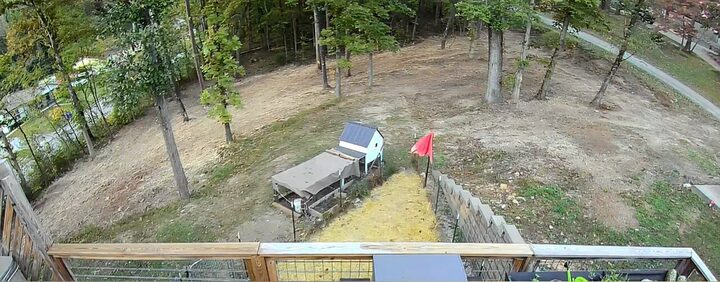
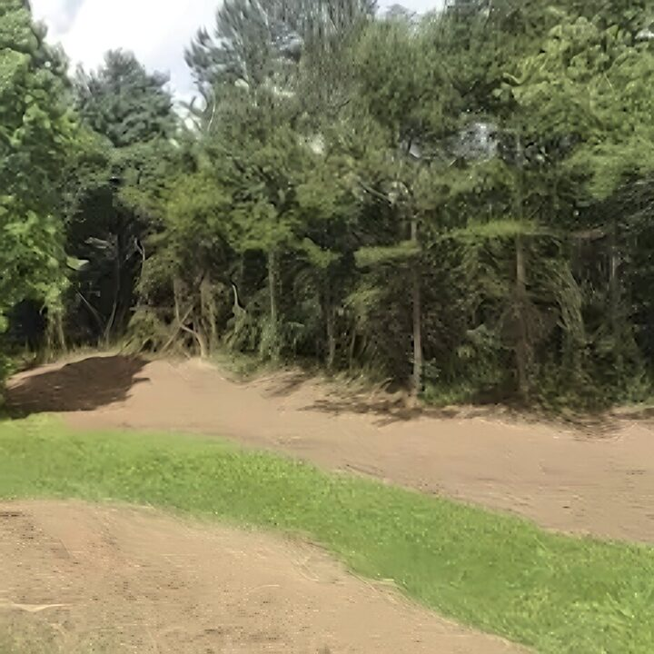

Landscaping
Mulching, edging, shrub care and full landscape overhauls that keep your property looking its best.
Learn more →What makes The Yard Force the clear choice in landscaping companies in the Knoxville, TN area?
Simple.
Great communication, great work, and great prices.
If you’re looking for a landscaping company in Knoxville, The Yard Force is the clear choice. We take care to provide top-notch customer service for businesses and homeowners just like you. Whether you’re looking for landscaping in Knoxville, land clearing, lawn care, hardscaping, or anything in between –– The Yard Force has you covered.

Mulching, edging, shrub care and full landscape overhauls that keep your property looking its best.
Learn more →Patios, retaining walls, fire pits and walkways built to last and add real value to your property.
Learn more →Weekly mowing, edging, striping, weed control and aeration for homes and commercial properties.
Learn more →Sprinkler and drip systems designed, installed and serviced to keep lawns and beds healthy.
Learn more →Forestry mulching and lot clearing that removes brush, trees and stumps and leaves your land ready to use.
Learn more →Forestry mulching and lot clearing that removes brush, trees and stumps and leaves your land ready to use.
Learn more →
★★★★★“If you're looking for land clearing The Yard Force has got you covered. Adam and his brother are the two I worked with to get my project down. They were extremely professional and accommodating. They got the job done quick and it was reasonably priced. Would highly recommend to anyone looking to Clear/mulch land.”
matt gutierrez
★★★★★“Before, During, and After!! Omg! The hubby and I cannot believe the difference! We own a home on a 2 acre lot in the city limits of Knoxville. 1.45 is a detention pond meant to hold up to 10 days of storm water due to the water shed/storm water act. We are so thankful and grateful to The Yard Force for everything! First person (Clay) for helping us get quoted, scheduled, and staying within our budget and answering all of our questions. Second person (Kevin) for helping me understand the job, being patient with me, and literally doing an amazing job! We are so excited to be able to use portions of our land that we thought would be lost forever!”
Ashley Merie · June 2024 ★★★★★
★★★★★“Adam and crew did an amazing job. They came out to look at the job on a Sunday and were there working 3 days later. Cleared a couple of acres for me with great communication and better finished product than we envisioned. Very prompt and professional crew. Would not hesitate to hire them again.”
Rick Jordan IIOur process is simple. Just contact us to get started.
From there we will provide you with a free consultation and quote. Before long the job is done!
Land clearing in Knoxville, Tennessee, offers significant benefits, particularly in a region characterized by its varied landscapes and the need for responsible land development and management.
Land clearing in Knoxville, Tennessee, when conducted responsibly and with consideration for environmental impacts, can support development, enhance ecological balance, and contribute to the health of the local environment. It’s a vital activity that supports the region’s growth, agricultural productivity, and natural beauty.
Here are three key advantages when you work with us at The Yard Force:

Ready to enhance your outdoor space with the expert touch of The Yard Force?
Whether you need a complete makeover or routine maintenance, our experienced team is here to serve ALL of Knoxville’s landscaping needs with precision and care.
Contact us today to schedule your consultation and discover why we’re the trusted choice for meticulous, veteran-owned landscaping services. Don’t wait—let’s create the landscape of your dreams!